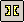
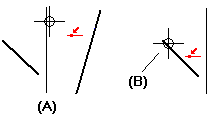
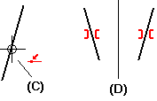
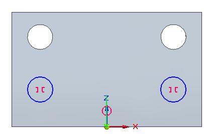
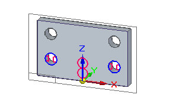

Make elements symmetric about an axis
You can use the Symmetric command in draft and in ordered part and assembly when creating profile sketches or layout sketches.
-
Choose the Symmetric command

. -
Click an existing line that you want to use as a symmetry axis (A).

In ordered profile sketch, you can use the Symmetry Axis command to activate a line to use as a symmetry axis before you select the Symmetry command. If you do, skip this step.
-
Click the first element that you want to make symmetric about the axis. (B)
-
Click another element that you want to make symmetric about the axis (C).
The two elements become symmetrical about the axis (D).

When you select the Hole command in the ordered environment, you can add a symmetric constraint between two hole circles in the hole circle sketch profile. This enables you to create symmetrically aligned holes within the same Hole feature.

